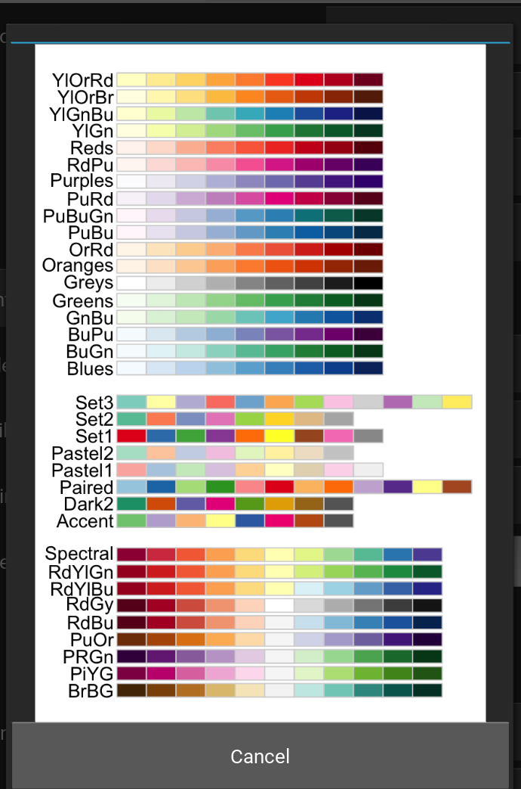

5 How to Use the Desktop Application
Before starting, ensure R is installed (and rtools for Windows), see Install R. To check, open the R terminal and type the following command to see where R is located on your computer:
.libPaths()Next, install the desktop application. See Install Desktop Application.
5.1 Basic Workflow
Note: we use the term “graphical user interface” interchangeably with “desktop application”.
Open the application to begin. Double-click on its icon:
The graphical user interface (GUI) contains sequential tabs taking users step-by-step through the Hourglass algorithm. Each tab contains options to relay data to the R package and customize Hourglass output. GUI tabs and key user events are described here.
Note: Hold and drag tabs at the top to scroll. Click on the tab name to access section.
- Upload Files (See The 3 Files for formatting)
- Define Comparisons of interest (row annotations)
- Define Feature Sets and pick relevant parameters (column annotations)
- Customize Colors for comparison subgroups
- Advanced Options for statistical tests, imputation, surival analysis, etc.
- Run Hourglass to create all plots with one click
Figure 5.1: Overview: all tabs.
5.2 Welcome
This tab briefly explains the overall workflow.
No actions are required by the user. Press the next tab “Upload Files” to start.

Figure 5.2: Welcome.
5.3 Upload Files
This tab specifies input data paths that will 1 - customize the user’s experience (in this application) and 2 - be used in Hourglass analysis runs.
- Enter the name of your dataset in text input field (“Enter Text Here”).
- Use “Choose File” buttons to upload the required 3 data files from your computer, specifically:
- numMat - numeric matrix file
- rowAnn - row annotations (clinical and sample descriptions)
- colAnn - column annotations (feature and parameter descriptions).
Check The 3 Files for table formatting details and supported file types.


Figure 5.3: Upload data.
Note: To upload, press on button and it will open a file chooser with this appearance:

Figure 5.4: File/Folder chooser view.
To go into a folder, double-click on its icon.
To go back up a folder, double-click on the first folder denoted “../”. It looks like this:

5.4 Define Comparisons
This tab creates a table of “comparisons” on how to stratify patients or samples. Each comparison/row will be run independent of other comparisons.


Figure 5.5: Pick comparisons.
Select “Patient ID” from the drop down menu displaying rowAnn column names. It will be used to group samples belonging to the same patient in By Patient analysis and patient-paired slopegraphs. Skip this step if patient-level analysis is not required.
Press the “Add a comparison” button to add a new comparison and fill in the option fields:
Note: All text input fields are case-sensitive, i.e. must match data.
Main or Custom Comparison
- Define a comparison for each row (required), by either:
- Selecting a “Main Comparison” from the drop down menu displaying rowAnn column names (e.g. smoker, age group)
- Filling “Custom Comparison” - type in the exact column name of a variable from numMat (feature+parameter e.g. IL6_num.positive.pixels) or from rowAnn (e.g. age)
- Customize comparison with optional fields:
Subgroup
Select a “Subgroup” from the drop down menu displaying rowAnn column names (e.g. smoker, age group). This is only for a secondary color coding of dots in boxplots and an extra annotation color bar in heatmaps. {insert 2 boxplot images with and without colored dots}
Within Group
This will run Hourglass within groups or cohorts of sample/patients. Append rowAnn column names with “,”. e.g. Sex,Smoker
Filter
Specify exclusion criteria with this format: rowAnn_columnname != variable to exclude or rowAnn_columnname == variable to keep. e.g. Smoker==“Yes” - this keeps all smokers and excludes all other samples/patients from analysis. Ensure that “Smoker” is a column in rowAnn and “Yes” is one of its column values. Choose multiple filters by appending filters with “;”, e.g. Smoker==“Yes”;NeoAdjuvant!=neo
By Sample
Check box to create plots from original input files, treating each row in numMat as an individual data point.
By Patient
Check box to average across Patient ID (see below) and create plots.
Note: at least one of By Sample or By Patient must be selected for comparison to run.
Example of a comparison:
| Field | Value | Description |
|---|---|---|
| Main comparison | Since main comparison is empty, custom comparison must be defined | |
| Custom comparison | IL6_Number.Positive.Pixels | Compare IL6 high vs low groups (# intermediate depends on the “Number of custom levels” in Advanced Options tab) |
| Subgroup | Smoker | Color code boxplot dots by Yes or No (values in Smoker column) |
| Within Group | Sex;Smoker | Run Hourglass for all samples/patients. Then rerun within male cohort and female cohort. Run within Smoker-Yes, then Smoker-No cohort. |
| Filter | NeoAdjuvant != neo | Before running this comparison, remove all samples/patient rows that are “neo”. |
| By Sample | (checked) | Run this comparison at the sample-level. |
| By Patient | (checked) | Run this comparison at the patient-level (average the multiple samples per patient). |
5.5 Define Feature Sets
This tab allows users to pick biologically relevant parameters for each feature and group them as feature sets.
Tab 1: Select columns
Select column name from colAnn for Feature and Parameter columns.
Recall Terminology:
Feature = stains, genes, markers, etc (e.g. Gene1, ProteinX, IL6), while
Parameters = readouts, measurements of features (e.g. Numbers of Positive Pixels, Percent Positive Pixels, Stained Area mm^2,Total Area mm^2).

Figure 5.6: Select columns for feature sets.
Tab 2: Define parameters
Using drop-down menus, pick relevant parameters for each feature (called standard) and optionally, an alternative.
Note: this will populate the table/sheet in the output Excel file called Feature Parameters.


Figure 5.7: Define feature set parameters.
Tab 3: Define sets
Next, define feature sets. Press the “Add a row” button to add a new set.
Name of group: Type in a name for group, e.g. T_cell_markers.
List of features: Type in a list of features (see Tab1 for options) or group names, appended with comma.
- The delimiter must be a comma, leading and trailing whitespace will be ignored. - Minimum of 3 features. - Case-sensitive.


Figure 5.8: Define feature sets.
Example of feature sets:
| Group Name | Group List | Alternative |
|---|---|---|
| TCell | CD3, CD8 | |
| BCell | CD20, CD27, CD5, PDL1 | |
| immune | TCell, BCell | |
| all | immune, IL6, SMA |
- Alt (Alternative): Select “Alt-Yes” to run this set with standard AND alternative parameters separately, or “Alt-No” for a run with standard parameters.
Note if “Alt-Yes” is selected, there will be two folders for a feature set, one with the original name and another with “_alt” appended, e.g. “TCell” for standard parameters and “TCell_alt” for alternative.
Note: this will populate the table/worksheet in the output Excel file called Feature Sets.
5.6 Advanced Options
This tab includes customization for statistics, plot types, etc.


Figure 5.9: Define feature sets.
Labels for options are on the left and drop down menus on the right side:
Correlation method: Method for correlation between two variables. Options are “pearson” (linear relationship using raw data), or”spearman”,“kendall” f(monotonic relationship using ranked data).
Test method: Which two-sample test should be used? Student’s t-test for parametric data, wilcoxon usually for non-parametric.
p-values label: How p (significance) values are to be represented in boxplots, correlation plots, p-value/fold-change heatmap. Stars or exact numeric values.
Fold-change method: Fold change computation method to use, either “divide” (for non-transformed values) or “subtract” (for log2-transformed values).
Color gradient: Color palette for scaled plot types: heatmaps, correlation plots. See color palettes (visual) by pressing the button “See color gradients”.
Figure 5.10: Color gradients supported by Hourglass - image from RColorBrewer.
Number of custom levels: Number of intermediate groups resulting from Hourglass separating a continuous variable into low, int, high. For example, if 2 is selected, there will only be low and high groups, whereas if 4 is selected, the groups will be low, int1, int2, high.
Save ID data to file: Would you like sample/patient IDs and corresponding comparison groups to be saved to a .csv table? If TRUE is selected, then yes. This may be useful to 1) identify how Hourglass stratified custom comparisons, i.e. which patient IDs were considers low, int, high in the analysis and 2) see which samples/patients were in analysis after filtering steps.
Log10 y axis for box/paired plots: Should the data be transformed (y axis) for box plots and patient-paired slopegraphs? Opt for this option if the data columns have large ranges.
Survival analysis options:
Check box (Run survival analysis) to specify creation of survival plots.
Survival time column: Time starting from a predefined point to the occurrence of the event of interest, usually OS time (overall survival time - time from diagnosis to death.
Censoring status column: Numeric event status represented by 0 and 1 for each patient, where 1 indicates the event has occurred and 1 means the status is incomplete. A patient is censored when we don’t know the true survival time for that patient.
The two columns above must be in rowAnn table.
Additional options:
Discrete parameters: Manually type in list of parameters (appended by “,”) in numMat that are to be viewed discretely, not continuous as Hourglass assumes. e.g. “Het.Score” might have values from 1 to 10.
Remove outliers: Check box. If selected, outliers will be removed columnwise for all runs (included imputed version) based on the IQR method. Any observations that are more than 1.5 IQR below Q1 or more than 1.5 IQR above Q3 are considered outliers and become NAs.
Run imputed version: + Check box to run imputed analysis in parallel. This indicates that all comparisons at sample and patient level will be run Hourglass + Move slider to specify the extent of imputation. Missing data points in numMat will be imputed columnwise with a random value plus or minus x% around the mean of each column, default is 5%.
5.7 Customize Colors
This tab contains buttons for each unique value in all comparisons.
- A button for each unique value in defined comparisons will automatically be displayed. For example, if “Cancer Type” was chosen as a main comparison, corresponding buttons for lung, breast, pancreatic, and other values in the “Cancer Type” column will be displayed.


Figure 5.11: Customize colors.
- Press the button to open a color picker window. Select a color by:
- Entering a hex code in the text input field at the bottom of the left panel.
- Placing and clicking cursor on the color wheel.
- Move slider.
- Press “Select and Close Window” to save.
If white (hex code #ffffffff) is chosen (center of the color wheel), that value will be excluded from all comparisons. This will bypass filters in comparisons. For example, perhaps “Sex” in rowAnn has the values “F”, “M” and “X”, where “X” does not have high enough patient numbers. To exclude this group, make the “Sex-X” button white.
Press “Select” to choose colors. Note: the information will help populate the table/sheet in the output Excel file called Colors.
5.8 Run Hourglass
This tab is the final tab that defines which plot types should be created in output folder


Figure 5.12: Run Hourglass.
Check boxes for quality control boxplots, for the feature and parameter colAnn columns (optional). See Quality Control (QC) Plots. Note this uses information from Feature Sets Tab 1.
Check boxes for plots that will be created for each feature set. Ensure “Feature Plots” is checked.
Either press:
- “Create output spreadsheet” button and navigate through the folder directory and save the Excel file locally. Modify if needed before pressing Run.
- OR press “Upload existing spreadsheet” and find and upload a locally existing Excel file.
Finally! Press the “Run Hourglass” button which interfaces to R (back-end). Hourglass will read from the Output: Excel File.
This action will relay user options and data file paths to the Hourglass R package and calls on functions to run comparisons using established R plotting libraries, such as ggplot2 and pheatmap. See Output Plot Types for more information. An error window will pop up if there are any issues running Hourglass.
5.9 Output: Excel File
The purpose of this application is to create an Excel file that
- will be read into R
- act as a log file for run specifications
Download output Excel file template here.
There are the 4 tables/worksheets:
| No. | Name | Description |
|---|---|---|
| 1 | Comparisons | comparisons and other analysis parameters (e.g, local file paths to data, survival columns, which plots to create) |
| 2 | Colors | color palette for values in comparisons, first column is name and second is color hex code |
| 3 | Feature Sets | named groups of features |
| 4 | Feature Parameters | standard and optionally alternative parameters for the feature sets |
You may manually add/modify specific run parameters here. For example, it may be laborious to retype all feature sets, so if the input data is the same, you could copy/paste from a previous run/table and upload to Hourglass.
1. Comparisons
This worksheet contains specifications for each run. The first column must be the exact names of the user options and the proceeding columns are comparisons, where each column is a comparison.
Figure 5.13: Example of Comparisons worksheet in output Excel file.
The first rows (“MainComparison” to “ByPatient”) reflect the comparison table in Define Comparisons, while the rest are options selected from other tabs (e.g. Advanced Options, Run Hourglass)
2. Colors
This worksheet contains hex-codes for colors in comparisons (form: #123456ff, where ff means full opacity) from Customize Colors. For example, if Sex was selected as a MainComparison, the strata “Sex-F” and “Sex-M” will show up here.
If you’d like to exclude an option(e.g. “Sex-X” due to low patient number), set to white “#ffffffff” or do not include and it will be removed from all comparisons with “Sex”.
This may be useful if you have high,int,low for a CustomComparison (see [Pick Comparisons] for definition) - if the intermediate group is to be excluded, delete the “Custom-int” row.
Colors are the same for all unique strata for consistency. For example, “Patient_Cancer_Subtype-A”, “Sample_Cancer_Subtype-A”, “Sex-A”, “Smoker-A”, “Random-A” all have the strata “A” and therefore will be the same color (ie first color defined, duplicates are ignored).
Figure 5.14: Example of Colors worksheet in output Excel file.
3. Feature Sets
This worksheet contains the table in Define Feature Sets “Tab 3: Define sets”.
Figure 5.15: Example of Feature Sets worksheet in output Excel file.
4. Feature Parameters
This worksheet contains the table in Define Feature Sets “Tab 2: Define parameters”.
Figure 5.16: Example of Feature Parameters worksheet in output Excel file.